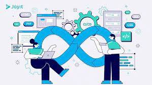

El desarrollo de software ha experimentado una transformación significativa con la adopción de
metodologías ágiles. Estas metodologías, como Scrum y Kanban, se centran en la colaboración, la
adaptabilidad y la entrega incremental. En lugar de seguir un enfoque riguroso y planificado desde
el principio, las metodologías ágiles permiten la flexibilidad para ajustar los requisitos a medida
que evolucionan durante el ciclo de desarrollo. La comunicación constante entre los miembros del
equipo y la retroalimentación frecuente del cliente son fundamentales en este enfoque, lo que
resulta en productos de software más alineados con las necesidades reales y en plazos de entrega más
cortos.

El enfoque DevOps ha revolucionado la forma en que se desarrolla y despliega el software. DevOps
combina el desarrollo (Dev) y las operaciones (Ops) para lograr una colaboración más estrecha y una
entrega más eficiente. La integración continua (CI) y el despliegue continuo (CD) son pilares clave
de DevOps. La CI implica la integración regular de código para identificar y corregir problemas
temprano, mientras que la CD automatiza el proceso de despliegue, permitiendo lanzamientos rápidos y
confiables. DevOps no solo acelera la entrega de software, sino que también mejora la calidad y la
estabilidad del producto final mediante la automatización de pruebas y la gestión eficiente de la
infraestructura.
A medida que el desarrollo de software se convierte en un componente crucial de la sociedad digital,
surge la necesidad de abordar cuestiones éticas y sostenibles. El desarrollo de software ético
implica consideraciones como la privacidad, la equidad y la transparencia en todas las etapas del
proceso de desarrollo. Además, la sostenibilidad en el desarrollo de software se refiere a la
creación de productos que minimizan su impacto ambiental y promueven la eficiencia energética. Estos
enfoques éticos y sostenibles no solo benefician a la sociedad y al medio ambiente, sino que también
contribuyen a la construcción de una reputación positiva para las empresas desarrolladoras de
software en un mundo cada vez más consciente de la responsabilidad social corporativa.